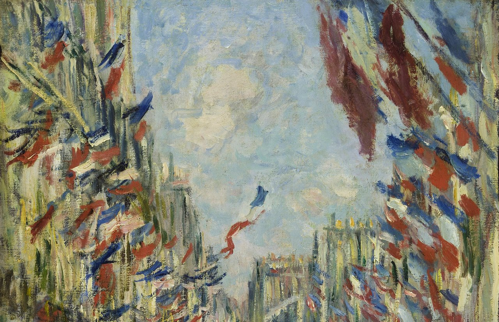
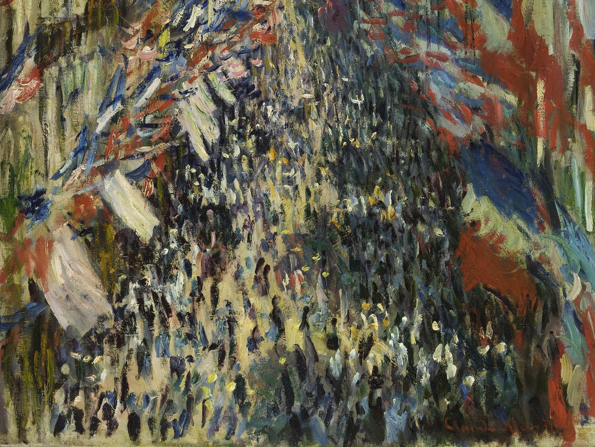

Optima Academy OnlineAn Education Experience Company
Optima Academy OnlineAn Education Experience CompanyGrammar Quiz & Year in Review
Get your ear tuned to the past. First, a familiar passage full of passé composé and imparfait — then answer one comprehension question by ear. This is a warm-up, not the quiz.
- Past-tense listening items (~15 pts): hear a sentence, then answer — identify the tense (passé composé vs. imparfait), the meaning, or a detail. Clips reuse this module's synthesis and passage audio. Headphones recommended; you can replay each clip.
- Grammar items (~15 pts): form the superlative (le plus / le moins / le meilleur), use voudrais for a polite wish, and choose the right past tense or object pronoun.
- Two attempts — your higher score counts. Review any misses before your second try.
One last ride around France before the Final: Paris, Normandy, Brittany, Provence and back to Paris, through places from your year. Each question reviews a point from one module, Module 1 to Module 9. A right answer moves you on; a wrong answer gives you a flat tyre.
- The Semester 2 Final is cumulative — it draws on every module of the semester: character & description, the regions, the past tenses, comparatives, the partitive, superlatives, voudrais, and reading.
- How to prep: reread your Day 4 and Day 5 sentences; run the Vocabulaire pages of the semester's modules by ear; and re-listen to two or three reading passages to keep your ear sharp for past-tense narration.
- Bring your Être français reflection — the Final rewards being able to narrate your year and compare, exactly what you practiced this module.
Before you close Module 9, the last module of French 1, go back to Monet’s painting one last time: look closely at close-ups 1 and 2. You will compose three sentences using the tools below: what you see, a superlative, and a wish with je voudrais. The fiche (fact card) gives you the words for the painting, the word bank adds more, and the coach checks each sentence as you write. Your sentences are saved in All Your Work.

1
2Claude Monet, La Rue Montorgueil, fête du 30 juin 1878 · Musée d’Orsay, Paris
- I can introduce myself, describe my family and my daily routine, and tell time.
- I can talk about school, food, leisure, and the weather, and describe people's character.
- I can narrate the past with the passé composé and the imparfait.
- I can compare and rank with comparatives and the superlative (le plus, le meilleur).
- I can make polite requests and wishes with je voudrais.
- I can read and understand a French passage, and reflect on what being French — and learning French — has meant to me.
A year ago, French was noise. Now you can describe, narrate, compare, request, and reflect — and you know a people through its language, culture, and virtues. Liberté, Égalité, Fraternité. Carry it forward. Vive la France, et félicitations ! (Long live France, and congratulations!)